")
Schatzsuche - Belohnungen
Einführung
In den nächsten Abschnitten seht ihr Beispiele für die Belohnungen, die ihr für das Auflösen einer Hinweis-Schriftrolle erhalten könnt. Für einige Schriftrollen bekommt ihr nur normale Gegenstände, wie zum Beispiel Waffen, Nahrung, Amulette oder Runen. Es gibt aber auch Gegenstände, die man nur durch Schatzsuchen erhält. Als Faustregel gilt: Je schwieriger die Schriftrolle zu lösen ist, desto attraktiver ist auch die Belohnung.
Für Schriftrollen jeden Schwierigkeitsgrads könnt ihr außerdem Bonbons und Feueranzünder bekommen; je schwerer die Lösung ist, desto mehr davon gibt es. Bonbons kann man stapeln und sie stellen einen Teil der Ausdauer wieder her. Feueranzünder sind nützlich, denn mit ihnen gelingt es einem in 100% der Fälle, Holzscheite anzuzünden. Ein schöner Nebeneffekt ist, dass das Feuer dann in verschiedenen Farben brennt. Außerdem erhaltet ihr nach hochstufigen Schriftrollen manchmal Vorladungen, in denen ihr darum gebeten werdet, im Dorf der Seher an einem Gerichtsverfahren teilzunehmen.
![[Bild]](../../img/main/kbase/items/misc/torn_sarapage.gif) Möglicherweise werdet ihr bei der Schatzsuche auch ausgerissene Seiten finden. Die Seiten sind von 1 bis 4 nummeriert, und ihr benötigt ein Exemplar jeder Seite, um ein vollständiges Gebetsbuch zu erhalten. Darüber hinaus hat jede Seite eine bestimmte Farbe (weiß für Saradomin, grün für Guthix und rot für Zamorak), also müsst ihr euch auch vergewissern, dass ihr im Besitz der richtigen Ausführung für euer Buch seid. Unvollständige Gebetsbücher geben euch nur einen Gebets-Bonus, vollständige bescheren euch zusätzliche Fertigkeits-Boni.
Möglicherweise werdet ihr bei der Schatzsuche auch ausgerissene Seiten finden. Die Seiten sind von 1 bis 4 nummeriert, und ihr benötigt ein Exemplar jeder Seite, um ein vollständiges Gebetsbuch zu erhalten. Darüber hinaus hat jede Seite eine bestimmte Farbe (weiß für Saradomin, grün für Guthix und rot für Zamorak), also müsst ihr euch auch vergewissern, dass ihr im Besitz der richtigen Ausführung für euer Buch seid. Unvollständige Gebetsbücher geben euch nur einen Gebets-Bonus, vollständige bescheren euch zusätzliche Fertigkeits-Boni. Weitere Informationen zu den Gebetsbüchern findet ihr hier.
Belohnungen Stufe 1
| Belohnung |
![[Bild]](../../img/main/kbase/minigames/trails/armour/black_helm_gold.gif)
![[Bild]](../../img/main/kbase/minigames/trails/armour/black_plate_gold.gif)
![[Bild]](../../img/main/kbase/minigames/trails/armour/black_legs_gold.gif)
![[Bild]](../../img/main/kbase/minigames/trails/armour/black_skirt_gold.gif)
![[Bild]](../../img/main/kbase/minigames/trails/weapons/black_kite_gold.gif)
Verziertes Schwarz-Rüstzeug |
![[Bild]](../../img/main/kbase/armour/melee/trail_items/black_h1_2.gif)
![[Bild]](../../img/main/kbase/armour/melee/trail_items/black_h2.gif)
![[Bild]](../../img/main/kbase/armour/melee/trail_items/black_h3.gif)
![[Bild]](../../img/main/kbase/armour/melee/trail_items/black_h4.gif)
![[Bild]](../../img/main/kbase/armour/melee/trail_items/black_h5.gif)
Schwarz-Pentaschilder mit Wappenzeichnung |
![[Bild]](../../img/main/kbase/minigames/trails/emote/helm_1_b.gif)
![[Bild]](../../img/main/kbase/minigames/trails/emote/helm_2_b.gif)
![[Bild]](../../img/main/kbase/minigames/trails/emote/helm_3_b.gif)
![[Bild]](../../img/main/kbase/minigames/trails/emote/helm_4_b.gif) 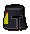
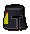
Schwarz-Vollhelme mit Wappenzeichnung |
![[Bild]](../../img/main/kbase/armour/ranged/trail_items/leather_trim.gif)
![[Bild]](../../img/main/kbase/armour/ranged/trail_items/leather_chaps_trim.gif) 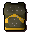
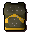
![[Bild]](../../img/main/kbase/armour/ranged/trail_items/leather_chaps_gold.gif)
Verziertes Leder-Rüstzeug |
![[Bild]](../../img/main/kbase/armour/mage/trail_items/wizard_hat_trim.gif)
![[Bild]](../../img/main/kbase/armour/mage/trail_items/wizard_hat_gold.gif)
![[Bild]](../../img/main/kbase/armour/mage/trail_items/wizard_top_trim.gif)
![[Bild]](../../img/main/kbase/armour/mage/trail_items/wizard_top_gold.gif)
![[Bild]](../../img/main/kbase/armour/mage/trail_items/wizard_bottom_trim.gif)
![[Bild]](../../img/main/kbase/armour/mage/trail_items/wizard_bottom_gold.gif)
Verzierte Magierroben |
![[Bild]](../../img/main/kbase/minigames/trails/emote/saradomin_robe_t.gif)
![[Bild]](../../img/main/kbase/minigames/trails/emote/saradomin_robe_l.gif)
![[Bild]](../../img/main/kbase/minigames/trails/emote/guthix_robe_t.gif)
![[Bild]](../../img/main/kbase/minigames/trails/emote/guthix_robe_l.gif)
![[Bild]](../../img/main/kbase/minigames/trails/emote/zamorak_robe_t.gif)
![[Bild]](../../img/main/kbase/minigames/trails/emote/zamorak_robe_l.gif)
Kleidung in den Farben von Saradomin, Guthix und Zamorak |
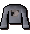
![[Bild]](../../img/main/kbase/minigames/trails/emote/bob_shirt_blue.gif)
![[Bild]](../../img/main/kbase/minigames/trails/emote/bob_shirt_green.gif)
![[Bild]](../../img/main/kbase/minigames/trails/emote/bob_shirt_purple.gif)
![[Bild]](../../img/main/kbase/minigames/trails/emote/bob_shirt_red.gif)
Bob-der-Kater-Hemden |
![[Bild]](../../img/main/kbase/minigames/trails/emote/pantaloons.gif)
![[Bild]](../../img/main/kbase/minigames/trails/emote/wig.gif) 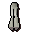
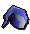
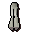
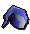
Gesten-Modifikatoren* |
![[Bild]](../../img/main/kbase/minigames/trails/emote/elegant_shirt_male_g.gif)
![[Bild]](../../img/main/kbase/minigames/trails/emote/elegant_shirt_male_b.gif)
![[Bild]](../../img/main/kbase/minigames/trails/emote/elegant_shirt_male_r.gif)
![[Bild]](../../img/main/kbase/minigames/trails/emote/elegant_shirt_female_g.gif)
![[Bild]](../../img/main/kbase/minigames/trails/emote/elegant_shirt_female_b.gif)
![[Bild]](../../img/main/kbase/minigames/trails/emote/elegant_shirt_female_r.gif)
![[Bild]](../../img/main/kbase/minigames/trails/emote/elegant_pants_male_g.gif)
![[Bild]](../../img/main/kbase/minigames/trails/emote/elegant_pants_male_b.gif)
![[Bild]](../../img/main/kbase/minigames/trails/emote/elegant_pants_male_r.gif)
![[Bild]](../../img/main/kbase/minigames/trails/emote/elegant_pants_female_g.gif) 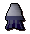
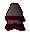
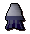
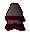
Schicke Kleidungsstücke in rot, blau und grün (für Damen und Herren) |
![[Bild]](../../img/main/kbase/minigames/trails/clothing/black_beret.gif)
![[Bild]](../../img/main/kbase/minigames/trails/clothing/blue_beret.gif)
![[Bild]](../../img/main/kbase/minigames/trails/clothing/white_beret.gif)
Barette |
![[Bild]](../../img/main/kbase/minigames/trails/accessories/highway_mask.gif)
Wegelagerer-Maske |
![[Bild]](../../img/main/kbase/minigames/trails/emote/amulet_of_magic.gif)
Amulett der Magie |
![[Bild]](../../img/main/kbase/minigames/trails/emote/composite_bow_willow.gif)
Weiden-Kompositbogen |
![[Bild]](../../img/main/kbase/minigames/trails/trails_3/black_crossbow.gif) ![[Bild]](../../img/main/kbase/minigames/trails/trails_3/black_bolts.gif)
Schwarz-Armbrust und Schwarz-Bolzen |
![[Bild]](../../img/main/kbase/minigames/trails/trails_3/black_cane.gif) Schwarz-Stock |
![[Bild]](../../img/main/kbase/minigames/trails/trails_3/spiked_helmet.gif) Stachel-Helm |
* Wenn ihr Gesten-Modifikatoren tragt, werden bestimmte Gesten anders ausgeführt als sonst. Schlaghosen modifizieren die Geste 'Tanzen', die Perücke die Geste 'Wütend', Beinkleider verändern die Geste 'Verbeugen' und die Schlafmütze die Geste 'Gähn'.
Belohnungen Stufe 2
| Belohnung |
![[Bild]](../../img/main/kbase/minigames/trails/armour/addy_helm_gold.gif)
![[Bild]](../../img/main/kbase/minigames/trails/armour/addy_plate_gold.gif)
![[Bild]](../../img/main/kbase/minigames/trails/armour/addy_legs_gold.gif)
![[Bild]](../../img/main/kbase/minigames/trails/armour/addy_skirt_gold.gif)
![[Bild]](../../img/main/kbase/minigames/trails/weapons/addy_kite_gold.gif)
Verziertes Adamant-Rüstzeug |
![[Bild]](../../img/main/kbase/armour/melee/trail_items/addy_h1_2.gif)
![[Bild]](../../img/main/kbase/armour/melee/trail_items/addy_h2.gif)
![[Bild]](../../img/main/kbase/armour/melee/trail_items/addy_h3.gif)
![[Bild]](../../img/main/kbase/armour/melee/trail_items/addy_h4.gif)
![[Bild]](../../img/main/kbase/armour/melee/trail_items/addy_h5.gif)
Adamant-Pentaschilder mit Wappenzeichnung |
![[Bild]](../../img/main/kbase/minigames/trails/emote/helm_1_a.gif)
![[Bild]](../../img/main/kbase/minigames/trails/emote/helm_2_a.gif)
![[Bild]](../../img/main/kbase/minigames/trails/emote/helm_3_a.gif) 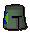
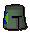
![[Bild]](../../img/main/kbase/minigames/trails/emote/helm_5_a.gif)
Adamant-Vollhelme mit Wappenzeichnung |
![[Bild]](../../img/main/kbase/armour/ranged/trail_items/green_body_trim.gif)
![[Bild]](../../img/main/kbase/armour/ranged/trail_items/green_chaps_trim.gif)
![[Bild]](../../img/main/kbase/armour/ranged/trail_items/green_body_gold.gif)
![[Bild]](../../img/main/kbase/armour/ranged/trail_items/green_chaps_gold.gif)
Verziertes Gründrachenleder-Rüstzeug |
![[Bild]](../../img/main/kbase/minigames/trails/emote/saradomin_cloak.gif)
![[Bild]](../../img/main/kbase/minigames/trails/emote/saradomin_mitre.gif)
![[Bild]](../../img/main/kbase/minigames/trails/emote/guthix_cloak.gif)
![[Bild]](../../img/main/kbase/minigames/trails/emote/guthix_mitre.gif)
![[Bild]](../../img/main/kbase/minigames/trails/emote/zamorak_cloak.gif)
![[Bild]](../../img/main/kbase/minigames/trails/emote/zamorak_mitre.gif)
Umhänge und Mitren in den Farben von Saradomin, Guthix und Zamorak |
![[Bild]](../../img/main/kbase/minigames/trails/emote/elegant_shirt_male.gif)
![[Bild]](../../img/main/kbase/minigames/trails/emote/elegant_shirt_male_p.gif) 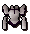
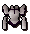
![[Bild]](../../img/main/kbase/minigames/trails/emote/elegant_shirt_female_p.gif)
![[Bild]](../../img/main/kbase/minigames/trails/emote/elegant_pants_male.gif)
![[Bild]](../../img/main/kbase/minigames/trails/emote/elegant_pants_male_p.gif)
![[Bild]](../../img/main/kbase/minigames/trails/emote/elegant_pants_female.gif)
![[Bild]](../../img/main/kbase/minigames/trails/emote/elegant_pants_female_p.gif)
Elegante Kostüme - schwarz (Männer), weiß (Frauen) und lila (Männer und Frauen) |
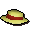
![[Bild]](../../img/main/kbase/minigames/trails/clothing/orange_strawboater.gif)
![[Bild]](../../img/main/kbase/minigames/trails/clothing/green_strawboater.gif)
![[Bild]](../../img/main/kbase/minigames/trails/clothing/blue_strawboater.gif)
![[Bild]](../../img/main/kbase/minigames/trails/clothing/black_strawboater.gif)
Strohhüte |
![[Bild]](../../img/main/kbase/armour/mage/wizardboots.gif)
Magierstiefel |
![[Bild]](../../img/main/kbase/armour/ranged/ranger_boots.gif)
Fernkämpfer-Stiefel |
![[Bild]](../../img/main/kbase/minigames/trails/accessories/black_headband.gif)
![[Bild]](../../img/main/kbase/minigames/trails/accessories/red_headband.gif)
![[Bild]](../../img/main/kbase/minigames/trails/accessories/brown_headband.gif)
Stirnbänder |
![[Bild]](../../img/main/kbase/minigames/trails/emote/amulet_of_strength.gif)
Amulett der Stärke |
![[Bild]](../../img/main/kbase/minigames/trails/emote/composite_bow_yew.gif)
Eiben-Kompositbogen |
![[Bild]](../../img/main/kbase/minigames/trails/trails_3/bat_mask.gif) ![[Bild]](../../img/main/kbase/minigames/trails/trails_3/cat_mask.gif) ![[Bild]](../../img/main/kbase/minigames/trails/trails_3/penguin_mask.gif) ![[Bild]](../../img/main/kbase/minigames/trails/trails_3/sheep_mask.gif) ![[Bild]](../../img/main/kbase/minigames/trails/trails_3/wolf_mask.gif)
Tiermasken |
![[Bild]](../../img/main/kbase/minigames/trails/trails_3/adamant_cane.gif)
Adamant-Stock |
![[Bild]](../../img/main/kbase/minigames/trails/trails_3/pith_helmet.gif)
Tropenhelm |
Belohnungen Stufe 3
| Belohnung |
![[Bild]](../../img/main/kbase/minigames/trails/emote/fighter_helm.gif)
![[Bild]](../../img/main/kbase/minigames/trails/emote/silver_plate_body.gif)
![[Bild]](../../img/main/kbase/minigames/trails/emote/silver_plate_legs.gif)
![[Bild]](../../img/main/kbase/minigames/trails/emote/fighter_shield.gif)
Rüstzeug aus dem Dritten Zeitalter |
![[Bild]](../../img/main/kbase/minigames/trails/emote/mage_hat.gif)
![[Bild]](../../img/main/kbase/minigames/trails/emote/mage_torso.gif)
![[Bild]](../../img/main/kbase/minigames/trails/emote/mage_legs.gif)
![[Bild]](../../img/main/kbase/minigames/trails/emote/mage_amulet.gif)
Magierroben aus dem Dritten Zeitalter |
![[Bild]](../../img/main/kbase/minigames/trails/emote/ranger_coif.gif)
![[Bild]](../../img/main/kbase/minigames/trails/emote/ranger_torso.gif)
![[Bild]](../../img/main/kbase/minigames/trails/emote/ranger_legs.gif)
![[Bild]](../../img/main/kbase/minigames/trails/emote/ranger_vambraces.gif)
Fernkampf-Ausrüstung aus dem Dritten Zeitalter |
![[Bild]](../../img/main/kbase/minigames/trails/armour/rune_helm_guthix.gif)
![[Bild]](../../img/main/kbase/minigames/trails/armour/rune_plate_guthix.gif)
![[Bild]](../../img/main/kbase/minigames/trails/armour/rune_legs_guthix.gif)
![[Bild]](../../img/main/kbase/minigames/trails/armour/rune_skirt_guthix.gif)
![[Bild]](../../img/main/kbase/minigames/trails/weapons/rune_kite_guthix.gif)
Verziertes Runit-Rüstzeug/Götter-Rüstzeug |
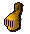
![[Bild]](../../img/main/kbase/minigames/trails/armour/rune_plate_guilded.gif)
![[Bild]](../../img/main/kbase/minigames/trails/armour/rune_legs_guilded.gif)
![[Bild]](../../img/main/kbase/minigames/trails/armour/rune_skirt_guilded.gif)
![[Bild]](../../img/main/kbase/minigames/trails/weapons/rune_kite_guilded.gif)
Vergoldetes Rüstzeug |
![[Bild]](../../img/main/kbase/armour/melee/trail_items/rune_h1_2.gif)
![[Bild]](../../img/main/kbase/armour/melee/trail_items/rune_h2.gif)
![[Bild]](../../img/main/kbase/armour/melee/trail_items/rune_h3.gif)
![[Bild]](../../img/main/kbase/armour/melee/trail_items/rune_h4.gif)
![[Bild]](../../img/main/kbase/armour/melee/trail_items/rune_h5.gif)
Runit-Pentaschilder mit Wappenzeichnung |
![[Bild]](../../img/main/kbase/minigames/trails/emote/helm_1_r.gif)
![[Bild]](../../img/main/kbase/minigames/trails/emote/helm_2_r.gif)
![[Bild]](../../img/main/kbase/minigames/trails/emote/helm_3_r.gif) 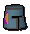
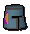
![[Bild]](../../img/main/kbase/minigames/trails/emote/helm_5_r.gif)
Runit-Vollhelme mit Wappenzeichnung |
![[Bild]](../../img/main/kbase/minigames/trails/emote/saradomin_chest.gif)
![[Bild]](../../img/main/kbase/minigames/trails/emote/saradomin_coif.gif)
![[Bild]](../../img/main/kbase/minigames/trails/emote/saradomin_chaps.gif)
![[Bild]](../../img/main/kbase/minigames/trails/emote/saradomin_vambraces2.gif)
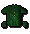 ![[Bild]](../../img/main/kbase/minigames/trails/emote/guthix_coif.gif)
![[Bild]](../../img/main/kbase/minigames/trails/emote/guthix_chaps.gif) 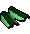
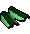
![[Bild]](../../img/main/kbase/minigames/trails/emote/zamorak_chest.gif)
![[Bild]](../../img/main/kbase/minigames/trails/emote/zamorak_coif.gif)
![[Bild]](../../img/main/kbase/minigames/trails/emote/zamorak_chaps.gif)
![[Bild]](../../img/main/kbase/minigames/trails/emote/zamorak_vambraces2.gif)
Gesegnetes Drachenleder-Rüstzeug |
![[Bild]](../../img/main/kbase/armour/ranged/trail_items/blue_body_trim.gif) 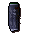
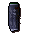
![[Bild]](../../img/main/kbase/armour/ranged/trail_items/blue_body_gold.gif)
![[Bild]](../../img/main/kbase/armour/ranged/trail_items/blue_chaps_gold.gif)
Verziertes Blaudrachenleder-Rüstzeug |
![[Bild]](../../img/main/kbase/minigames/trails/emote/saradomin_staff.gif)
![[Bild]](../../img/main/kbase/minigames/trails/emote/saradomin_scarf.gif)
![[Bild]](../../img/main/kbase/minigames/trails/emote/guthix_staff.gif)
![[Bild]](../../img/main/kbase/minigames/trails/emote/guthix_scarf.gif)
![[Bild]](../../img/main/kbase/minigames/trails/emote/zamorak_staff.gif)
![[Bild]](../../img/main/kbase/minigames/trails/emote/zamorak_scarf.gif)
Krummstäbe und Schärpen in den Farben von Saradomin, Guthix und Zamorak |
![[Bild]](../../img/main/kbase/armour/mage/trail_items/enchanted_hat.gif)
![[Bild]](../../img/main/kbase/armour/mage/trail_items/enchanted_top.gif)
![[Bild]](../../img/main/kbase/armour/mage/trail_items/enchanted_bottom.gif)
Verzauberte Roben |
![[Bild]](../../img/main/kbase/minigames/trails/clothing/black_cavalier.gif)
![[Bild]](../../img/main/kbase/minigames/trails/clothing/tanned_cavalier.gif)
![[Bild]](../../img/main/kbase/minigames/trails/clothing/brown_cavalier.gif)
Krempenhüte |
![[Bild]](../../img/main/kbase/armour/ranged/robinhood.gif)
Robin-Hood-Mütze |
![[Bild]](../../img/main/kbase/minigames/trails/clothing/pirate_hat.gif)
Piratenhut |
![[Bild]](../../img/main/kbase/minigames/trails/emote/amulet_of_glory.gif)
Amulett des Ruhms |
![[Bild]](../../img/main/kbase/minigames/trails/emote/composite_bow_magic.gif)
Magie-Kompositbogen |
![[Bild]](../../img/main/kbase/minigames/trails/trails_3/rune_cane.gif)
Runit-Stock |
![[Bild]](../../img/main/kbase/minigames/trails/trails_3/top_hat.gif)
Zylinderhut |
Bitte klickt hier, um zur Hauptseite über die Schatzsuche zurückzukehren

Weitere Artikel in Spaß für zwischendurch
|
|
|
Weiterführende Informationen Wenn euch dieser Artikel nicht weitergeholfen hat, könnt ihr in den folgenden Kapiteln der RuneScape-Webseite mehr Informationen finden:
|
|